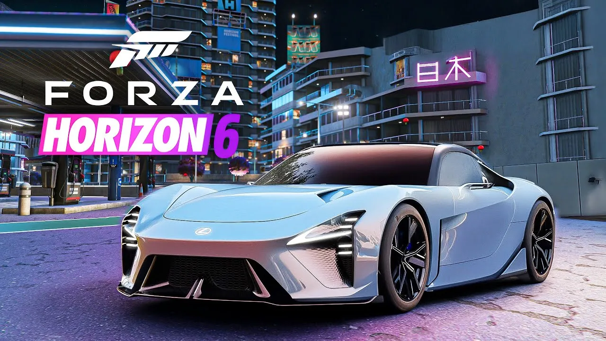
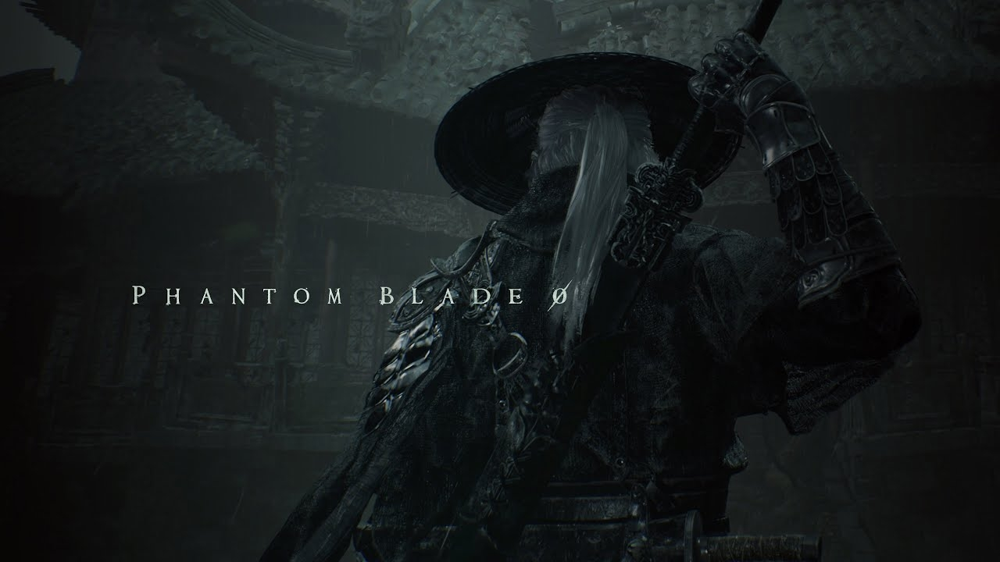
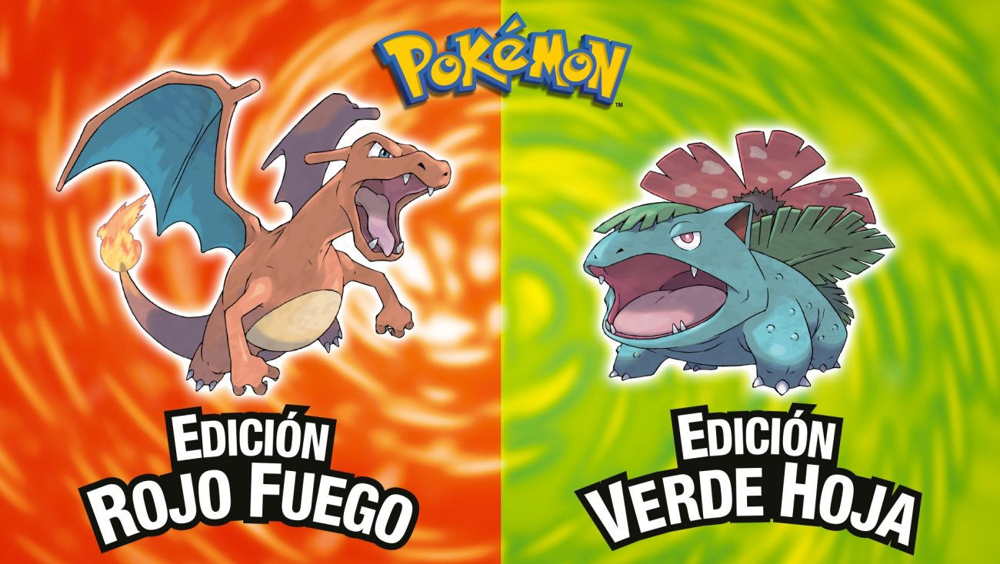

Los títulos más esperados
Resident Evil: Requiem
La legendaria franquicia de survival horror regresa con una propuesta que promete redefinir la tensión y el terror psicológico. En esta nueva entrega, los jugadores se adentrarán en una atmósfera asfixiante y meticulosamente diseñada, donde cada sombra puede ocultar un peligro letal. El título vuelve a sus raíces apostando por una escasez extrema de recursos, puzles intrincados integrados de forma orgánica en el entorno y un diseño de niveles altamente interconectado. Prepárate para una experiencia inmersiva en la que la exploración cautelosa y la toma de decisiones bajo presión serán vitales para desentrañar los oscuros secretos de una locación completamente inédita en la saga.
Requisitos en PC
| Mínimos |
Recomendados |
| Windows 10 (64-bit) |
Windows 11 (64-bit) |
| Intel Core i5-10400 / AMD Ryzen 5 3600 |
Intel Core i7-12700 / AMD Ryzen 7 5800X |
| 16 GB RAM |
32 GB RAM |
| RTX 3060 / RX 6700 XT - 80 GB SSD |
RTX 4070 / RX 7800 XT - 80 GB SSD |
Forza Horizon 6

La cúspide de la conducción arcade de mundo abierto aterriza con un despliegue técnico sin precedentes, diseñado para exprimir al máximo el hardware de nueva generación. Esta sexta entrega traslada su famoso festival automovilístico a una región vasta y vibrante, caracterizada por su extrema diversidad de biomas y un sistema meteorológico dinámico que afectará directamente las físicas de conducción. Los jugadores podrán disfrutar de una lista de vehículos hiperrealistas, opciones de personalización más profundas y una integración multijugador fluida. Ya sea compitiendo en eventos oficiales o simplemente explorando carreteras panorámicas, el juego ofrece un equilibrio perfecto entre simulación accesible y pura diversión al volante.
Requisitos en PC
| Mínimos |
Recomendados |
| Windows 10 (64-bit) |
Windows 11 (64-bit) |
| Intel Core i5-8400 / AMD Ryzen 5 2600 |
Intel Core i5-11600K / AMD Ryzen 5 5600X |
| 16 GB RAM |
16 GB RAM |
| GTX 1070 / RX 5700 XT - 130 GB SSD |
RTX 3080 / RX 6800 XT - 130 GB SSD |
Phantom Blade Zero

Este ambicioso título de acción y rol irrumpe en la escena combinando una dirección artística de inspiración oriental con una estética de fantasía oscura sumamente estilizada. El núcleo de su jugabilidad reside en un sistema de combate vertiginoso y letal, fuertemente arraigado en las artes marciales tradicionales y el manejo de espadas. Los jugadores deberán dominar complejos árboles de habilidades, realizar bloqueos precisos y encadenar combos devastadores para sobrevivir en un mundo semiabierto plagado de enemigos formidables. Con un enfoque narrativo maduro y un diseño de jefes espectacular, promete ser un desafío profundamente gratificante para los amantes de la acción técnica y exigente.
Requisitos en PC
| Mínimos |
Recomendados |
| Windows 10 (64-bit) |
Windows 11 (64-bit) |
| Intel Core i5-10400 / AMD Ryzen 5 3600 |
Intel Core i7-10700K / AMD Ryzen 7 5700X |
| 16 GB RAM |
32 GB RAM |
| RTX 3060 / RX 6600 - 100 GB SSD |
RTX 3080 / RX 6800 - 100 GB SSD |
Grand Theft Auto VI

El título más anticipado de la década se prepara para establecer un nuevo estándar en la industria de los videojuegos de mundo abierto. Llevando la simulación de vida urbana a cotas inimaginables, esta mastodóntica producción ofrece un ecosistema vivo, donde cada personaje no jugable cuenta con rutinas complejas y el entorno reacciona de manera realista a las acciones del jugador. La narrativa se centrará en una historia coral llena de ambición, supervivencia y giros inesperados, ambientada en una reimaginación hiperdetallada de una de las regiones más icónicas de la franquicia. Con mecánicas de conducción pulidas, tiroteos tácticos y un sinfín de actividades secundarias, busca redefinir por completo el concepto de libertad interactiva.
Requisitos en PC (Aproximados)
| Mínimos |
Recomendados |
| Windows 10 (64-bit) |
Windows 11 (64-bit) |
| Intel Core i7-8700K / AMD Ryzen 7 2700X |
Intel Core i7-13700K / AMD Ryzen 7 7800X3D |
| 16 GB RAM |
32 GB RAM |
| RTX 2070 / RX 5700 XT - 150 GB SSD |
RTX 4080 / RX 7900 XTX - 150 GB NVMe SSD |
Pokémon Rojo Fuego y Verde Hoja

La región de Kanto abre sus puertas una vez más en esta ambiciosa reinvención del clásico atemporal, construida desde cero para aprovechar al máximo las capacidades de la consola híbrida en 2026. Lejos de ser un simple lavado de cara, el título presenta un apartado visual completamente renovado en tres dimensiones, ofreciendo una perspectiva fresca y vibrante de las rutas y ciudades que marcaron a toda una generación. El sistema de captura y combate ha sido refinado para integrar mecánicas modernas y una interfaz más intuitiva, manteniendo intacta la profundidad táctica y la formación de equipos que definen a la saga. Esta entrega busca ser el puente perfecto entre la nostalgia ineludible de los veteranos y una experiencia de rol accesible para los nuevos entrenadores.
Especificaciones en Consola
| Modo Portátil |
Modo Televisor (Dock) |
| Resolución Dinámica 720p |
Resolución 1080p Nativa |
| 30 FPS Estables |
60 FPS Estables |
| Controles Joy-Con integrados |
Compatible con Mando Pro |
| Requiere 12 GB de espacio |
Requiere 12 GB de espacio |